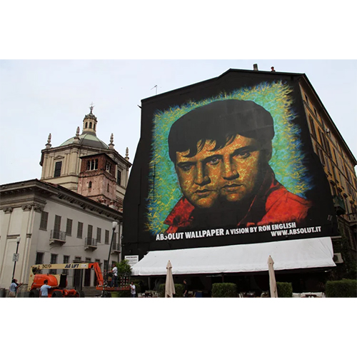

Absolut Elvis, Milan, 2010
Public mural created for Absolut Vodka’s Absolut Wallpaper: A Vision by Ron English, installed in Milan in 2010.

Work details
Gallery
Add additional views here if available, such as installation views, details, or alternate documentation images.
Sources
- Wooster Collective – “Ron English’s ‘Absolut Wallpaper’ in Milan and Rome”
- ADC Group – “Absolut Wallpaper: due nuove rivisitazioni by Ron English”
- RedMag – “Absolut Wallpaper – A Vision by Ron English”
- Sfilate.it – “Absolut Wallpaper: una visione di Ron English a Roma e Milano”
- MyArtistic – “Ron English Pop Surrealismo per Absolut Wallpaper”
- Virgin Radio – “Elvis visto a Milano!”
- MuralesMilano – “Ron English e l’arte urbana: la POPaganda”
- Times of India – Basilica San Lorenzo Maggiore travel guide
- Pursuitist – “48 Hours in Milan”
- ElvisNews – “Elvis Mural in Milan”